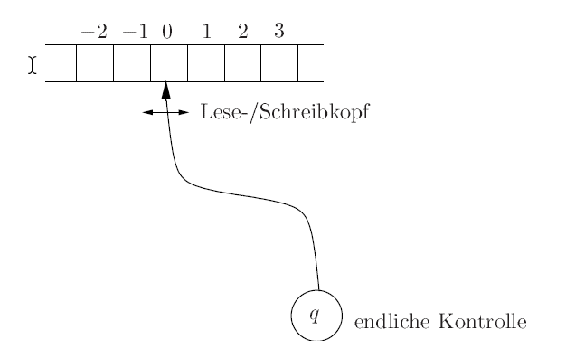
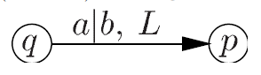
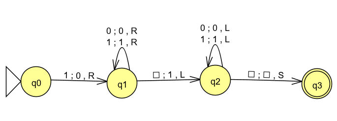
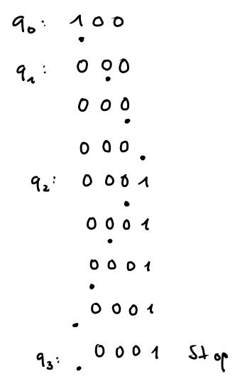
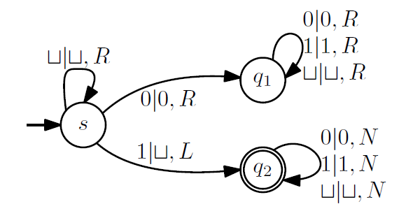
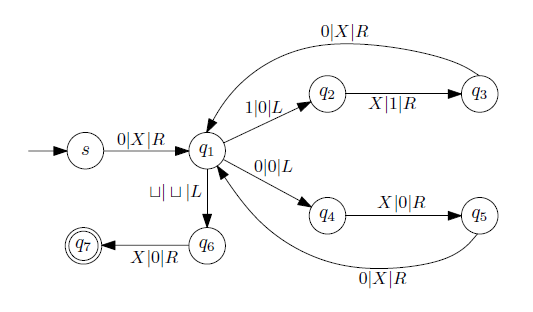

Eine Turingmaschine (TM) besteht aus
Die endliche Kontrolle steuert die Turingmaschine: Ausgehend von dem aktuellen Zustand liest die TM das Zeichen auf dem Band, geht in einen Folgezustand über, überschreibt ggf. das Zeichen auf dem Band und kann dann den Lese/Schreibkopf nach links oder rechts bewegen.
Eine deterministischer Turingmaschine besteht aus :

Die TM ist im Zustand q, liest auf dem Band a, überschreibt dies mit b, geht eins nach links und wechselt
in den Zustand p
Die Turingmaschine startet im Zustand s am linkesten Eingabezeichen. Sie stoppt, wenn sie zum ersten Mal in einen Endzustand kommt oder wenn sie in einem Zustand ein Symbol liest, das Symbol wieder hinschreibt, den Zustand nicht wechselt und den Lese/Schreibkopf nicht bewegt. Sie akzeptiert eine Eingabe \(w\), wenn sie nach Abarbeitung von \(w\) in einem Endzustand stoppt.
Eine TM akzeptiert (erkennt) eine Sprache \(L\) wenn sie genau die Worte aus \(L\) akzeptiert. Für Worte, die nicht aus \(L\) sind gibt es zwei Möglichkeiten: entweder die TM stoppt in einem Zustand, der kein Endzustand ist, oder sie stoppt gar nicht.
Das folgende Beispiel zeigt, wie wir die Abarbeitung eines Wortes verfolgen.
Die Notation der Übergänge in JFLAP ist etwas anders, aber leicht zu übertragen.

Die Abarbeitung des Wortes \(100\) verfolgen wir auf dem Papier wie folgt:

Was erkennt diese Turingmaschine?
Gibt es Eingaben, für die die TM niemals stoppt?

Für die folgende Turingmaschine gilt: \( \Sigma = \{0,1\} \), im Bandalphabet steht noch das Zeichen \(X\) zur
Verfügung.
1. Dokumentiere die Berechnung des Wortes \(01101\)
2. Was macht diese Turingmaschine?
3. Gib eine äquivalente TM mit höchstens 3 Zuständen an.

Turingmaschinen haben eine Eingabe und (bei Stop) eine Ausgabe. Sie berechnen (partielle) Funktionen.
Church'sche These: Die Menge der (Turing-)berechenbaren Funktionen ist genau die Menge der im intuitiven Sinne überhaupt berechenbaren Funktionen.
Alle Versuche, die im intuitiven Sinne berechenbaren Funktionen formal zu präzisieren, führten bisher auf die Menge der (Turing-)berechenbaren Funktionen. Deshalb ist allgemein anerkannt:
Die Turingmaschinen sind die formalen Modelle für Algorithmen. Kein Verfahren kann algorithmisch genannt werden, wenn es nicht von einer Turingmaschine ausführbar ist.
Turing Machine Simulator (Ugarte)
Turing Machine Simulator (Morphett)